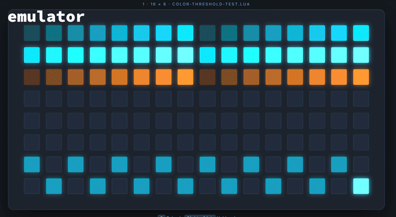
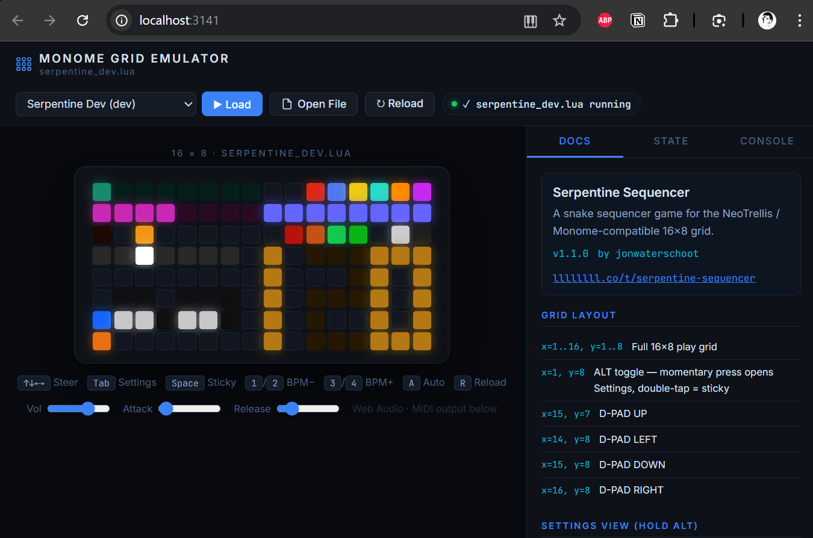

diii-neotrellis-emulator¶
A browser-based emulator for loading Lua scripts designed for Monome and NeoTrellis grids. This project was born from my first tests of making an interactive manual for my serpentine script. I soon started implementing sound and thought i might as well build a full webapp to also emulate other scripts.
This is a vibecoded project, but none the less I have spent many hours building this and learning about the eco system.
I have a few diy projects from okyeron, and it was through that discord server that I got intruiged by the new diii possibilities.
I built my own version of the firmware looking to create compatibility with og monome grid. I do not own any original monome geaar unfortunately.
I also hope I'm not breaking any licensing things, if so please let me know. I thought it be best if I also shared under the gpl license.
Scripting & Hardware Compatibility¶

Recording of color_fallback_demo.lua on NeoTrellis hardware, showing the device after using viii for the monochrome version of the test and then toggling pixels on the device.

Recording of color_fallback_demo.lua on NeoTrellis hardware, showing the fallback test running on device with interactive pixel toggling.
I wrote a quick readme guidein the uf2s directory with some quick tips to get the custom firmware for pico neotrellis up and running.
The emulator supports scripts written for both the original Monome Grid (monochrome) and the Adafruit NeoTrellis (RGB). To ensure your scripts are portable across different hardware targets, the following compatibility patterns are recommended.
Monochrome Fallback Implementation¶
When developing for RGB grids, it is best practice to include a fallback for monochrome devices. This allows your script to run on standard Monome hardware without modification.
1. Feature Detection¶
Use the presence of grid_led_rgb to determine if the hardware supports per-pixel color.
if grid_led_rgb then
-- RGB Hardware logic
grid_led_rgb(x, y, 255, 120, 0) -- Orange
else
-- Monochrome Fallback logic
grid_led(x, y, 15) -- Full Brightness
end
2. Global Tinting vs. Per-Pixel Color¶
When firmware supports it, grid_color(r, g, b) sets a global tint for subsequent grid_led() / grid_led_all() output. This is useful when you want a single color theme across the grid without per-pixel overrides.
grid_color(r, g, b): Sets the global tint forgrid_led()andgrid_led_all()output.grid_led_rgb(x, y, r, g, b): Sets true per-pixel RGB color.grid_color_intensity(level): Sets a master brightness multiplier for the rendered output.
In practice, use grid_color() for tinted monochrome-style modes, and grid_led_rgb() when you need independent colors on the same grid.
3. Graceful Degradation¶
Scripts like monochrome_fallback.lua demonstrate how to handle state transitions:
- Rainbow/Color Modes: active only if grid_led_rgb is available.
- Intensity Modes: fallback to grid_led(x, y, 0-15) when color is unavailable.
- Auto-Initialization: Detect hardware on script load to set default animation modes.
-- Example from monochrome_fallback.lua
if not grid_led_rgb then
anim_mode = 1 -- Force Monochrome mode
palette_rgb = false
end
Hardware Limitations & Color Accuracy¶
NeoTrellis Color Rendering Issues¶
Low Brightness Color Shift: At brightness levels 4-7, NeoTrellis LEDs exhibit inconsistent color rendering where cyan/blue tints may appear orange or reddish. This is due to physical LED characteristics and PWM limitations at low duty cycles.
Confirmed Thresholds (based on hardware testing):
- Level 1-2: Physically invisible on tinted grid_led() calls
- Level 3: First visible level on tinted grid_led() calls, but colors may be inaccurate
- Level 4-7: Visible but cyan/blue tints often render as orange/reddish
- Level 8+: Generally accurate color reproduction
- RGB overrides: grid_led_rgb() provides better color accuracy even at low brightness levels
Testing Results: Using color-threshold-test.lua on NeoTrellis hardware shows that tinted grid_led() calls become invisible at levels 1-2 and show color shifts at levels 3-7, while grid_led_rgb() calls maintain better color fidelity throughout the range.

Systematic testing of color accuracy across brightness levels. Left side: tinted grid_led() calls (may shift on hardware). Right side: RGB overrides (maintains color accuracy).
Cross-Platform Testing: Test scripts in both diii (color) and viii (monochrome) webapps: - diii app: Shows full color rendering with RGB overrides - viii app: Shows monochrome fallback (ignores RGB calls, shows only grid_led calls as white)
Testing Script: Use scripts/colorfallback/color-threshold-test.lua to identify exact color accuracy thresholds on your specific hardware.
Workaround Demo: scripts/colorfallback/color-workaround-demo.lua shows how to use grid_led_rgb() overrides for accurate low-brightness colors.
Recommendations:
- For reliable color reproduction, use brightness levels 8-15
- At lower levels, consider using monochrome mode or RGB overrides instead of tinted grid_led()
- Test your scripts on actual hardware, as the emulator may not perfectly replicate these physical limitations
Available Scripts¶
serpentine_dev.lua: A sophisticated snake-style sequencer with arpeggio support.monochrome_fallback.lua: A reference implementation for cross-hardware compatibility.power_test.lua: Diagnostic tool for grid power management.test-grid-color.lua: Comprehensive color compatibility test (global tints, RGB overrides, monochrome fallback).color-threshold-test.lua: Tests color accuracy at different brightness levels to identify hardware limitations.color-workaround-demo.lua: Demonstrates workarounds for NeoTrellis color accuracy issues at low brightness.
As okyeron started sharing news of the diii build for pico, i started trying to make a script that uses color.
I forked his repo and started implementing this into this fork branch feature/colors
Neotrellis repo by okyeron: https://github.com/okyeron/neotrellis-monome :
Code to use a set of Adafruit NeoTrellis boards as a monome grid clone using an off-the-shelf microcontroller.
[!IMPORTANT]
I am not a C++ developer, and have made heavy use of vibecoding using Claude, Gemini in as plugins in VSCode and Google Antigravity to get this working.
I actually first started making a webpage to make a manual for my serpentines script, as it became close to a working version of the script i decided to try and make a emulator for it, so that i could keep my documentation up to date with my script.
So far my goal is to make an emulator that can be used as a manual guide for my scripts, and to make it easier to develop and test them.

I have put my uf2 files in the uf2s/ directory. in that directory also: a copy of the readme's that were created while building the neotrellis compatible firmware for the diii.
[!NOTE] Nuke uf2 tool - Done some stupid thing like making a device crashing luascript the default to load on start? Bricking you out of using the webapp diii? Asking for friend 😉 You'll need to nuke the Flash
Official diii pages:¶
-
Webapp to upload lua files: https://monome.org/diii/
- Repo: https://github.com/monome/web-diii
-
Docs: https://monome.org/docs/iii/
-
Post on the monome forum about the release of iii by tehn (Brian Crabtree): https://llllllll.co/t/iii/74311
- Scripts shared by tehn on the forum:
- meadowphysics (full version, basically identical to the module )
- intervals (a MIDI key map with linnstrument-like indication)
- wake (another polymodulated awake-style sequencer with an interesting scale builder)
- Scripts shared by tehn on the forum:
Okyeron's neotrellis repo: https://github.com/okyeron/neotrellis-monome
My scripts¶
-
serpentineseqr dev - a snake game with color support for a 128 grid - my main reason to build this seq, and my main focus before i started building this emulator.
Its still not working as I envisioned it, but its getting there. -
monochrome fallback test - as i needed to test if the monochrome fallback was working
-
power test - as i needed to test if the power wasnt causing brownouts
[!NOTE]
It is my intention to try and make my scripts backwards compatible with a standard monome grid, so that they can be run on both a standard monome grid and a neotrellis grid.
This is why i have included themonochrome_fallback.luascript. And i'm trying to use if grid.type == "neotrellis" to check for the grid type.
Features¶
- Grid Emulation: Simulate monome and neotrellis grids with interactive buttons.
- Lua Script Execution: Run Lua scripts directly in the browser.
- Real-time Feedback: See button presses and grid state updates in real-time.
- Multiple Grid Support: Supports both standard monome grids and 16x16 neotrellis grids.
Getting Started¶
Prerequisites¶
- A modern web browser (Chrome, Firefox, Safari, Edge).
- Node.js (for running the development server).
Installation¶
-
Clone the repository:
bash git clone <repository-url> cd diii-neotrellis-emulator -
Install dependencies:
bash npm install
Usage¶
-
Start the development server:
bash npm start -
Open your browser and navigate to
http://localhost:3141. -
Select a Lua script to load and interact with the grid.
Development¶
Adding New Scripts¶
To add a new Lua script, simply place it in the scripts/ directory. The script will be automatically loaded by the emulator.
Development Server¶
The development server includes hot-reload, so any changes to the Lua scripts or the emulator code will be reflected immediately in the browser.
Deployment (GitHub Pages)¶
This project is compatible with GitHub Pages. To host it yourself:
- Go to your repository Settings > Pages.
- Under Build and deployment, set Source to
Deploy from a branch. - Select the
mainbranch and the/ (root)folder, then click Save. - Your emulator will be available at
https://<your-username>.github.io/diii-neotrellis-emulator/.
[!TIP] The application uses relative paths, so it will work correctly even in a repository subfolder.
License¶
This project is currently under research regarding the various licenses that may apply to the third-party components and resources it integrates.
For the original work contained within this repository, I have chosen the GPL-3.0 License. It is my personal intention to freely share anything I've made with the community.